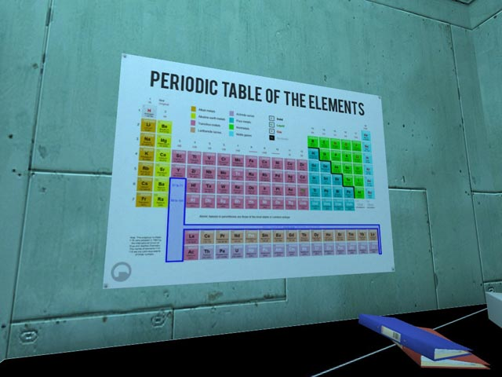
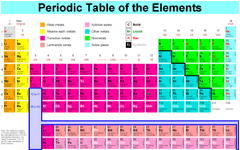

About the Dynamic Periodic Table

 If you have a question about this periodic table that's not on this page or you would like to follow up on one of the below questions, contact me. For general chemistry (homework) questions, visit the chemistry forum.
- How can I use the site when I'm not online?
- The best solution at this point is just to load the site in your browser, click around the tabs to cache most of the data, and then activate the Work Offline feature of your browser before revisiting the site. Most of the site will continue to function without Internet connectivity.
- Isn't it supposed to be Lanthanide, not Lanthanoid?
- No, not according to IUPAC [PDF] (IR-3.5).
- Where are the Roman numeral group numbers like VIIB?
- Roman numerals for groups were scrapped in 1984 when Reagan defeated Mondale.
- New address?
- The old address, dayah.com/periodic, will always work. The new domain Ptable.com is just to give you, the regular visitor, something easy to spell, type, and remember.
- What makes this periodic table different?
-
- All HTML. No images. No Flash.
- This gives all the scalability and accessibility of a normal web page while looking as good as any image or Flash out there. Highlight and copy data, print, and resize to suit your vision, just like you would with any web page. Your browser's View, Text Size scales the table up or down as you choose. If you prefer Flash, check out Brian Adams' table.
- Everything on one page.
- You won't find another periodic table that crams so much information into one page. Element names are even left aligned to facilitate easy scanning even though I find it less aesthetically pleasing. Form always follows function.
- Instantly swap layouts.
- Use the check boxes at the top of the page to dynamically switch between simple, with names, with electron configuration, and inline inner transition metals. View as much or as little information as you'd like or your screen allows.
- Realtime data view.
- Select Properties and move your mouse over any element to instantly update 16 properties as well as a detailed view of that element.
- Instantly swap data.
- Only want to see one piece of data at a time, like electronegativity? Whatever you choose appears in place of atomic weight while symbol and atomic number stay visible. Or, maximize and select names and/or electron configs to accompany the dataset you choose.
- Visualize trends.
- Does atomic radius go up or down by group? Select it and the color of all elements will change in proportion to their values.
- Reliable source data.
- Our data doesn't come from secondary sources. When important values disagree with WebElements, which also uses primary sources, we discuss who might be wrong and why, perhaps even leaving our data mismatched so you get the chance to make your own analysis. Significant digits are preserved in readouts whenever space permits. Translations and foreign element names, however, should be considered no more reliable than Wikipedia.
- State of matter slider.
- Drag the slider above the nonmetals and see the state of matter of each element at that temperature.
- Time machine.
- After selecting discovery year in Properties, use the slider to go back in time and display only the elements discovered by that year.
- Data subsets.
- Once you've selected a dataset, the slider area reveals related properties. After selecting radius, for example, covalent, empirical, calculated, and van der Waals radii are available. All told, the slider area exposes another 17 properties in addition to the 16 shown, not including the first 30 ionization energies, allowing efficiency functioning on multiple levels and in multiple dimensions.
- Orbitals.
- Complete orbital readout for each element's ground state, quantum numbers, oxidation states, and diagram following Hund's rules. Hover over each electron pair for a 3-D view of that orbital or hover over the element to view its highest energy level electron pair.
- Isotopes.
- Click an element in the isotope view to overlay selected or all known isotopes. Hover over to fan through like a deck of cards as 5 properties update including half-life. Borders indicate primary decay mode.
- Dozens of languages.
- Element names in dozens of languages, even Asian scripts. If your browser sends a compatible language header, you'll be automatically served the site in the language you prefer. Force a different language using the drop down box. Why is it important for the periodic table to be offered in so many languages?
- ikipedia integration.
- Click any element to pop up a window with its Wikipedia page…in any language.
- Instant search.
- Can't seem to find an element? Type its name, symbol, or atomic number into the box below the alkalis and it will instantly highlight.
- data retrieval.
- Detailed data is retrieved using Ajax only when you request it.
- Never reloads.
- Whether you're changing layouts, visualizing data, boiling and freezing elements, searching, or browsing Wikipedia, the site will never interrupt your session by reloading, opening new windows, or resizing your window. Quite the contrary; the site will show you as much as possible without horizontal scrolling as you resize, so try maximizing.
- Persistence.
- Revisit with the same browser and the site will remember the tab you were using, the dataset you were visualizing, your layout options, and even the temperature you last set. Click the title at the top to reset most options and fit to width.
- Printable.
- Print any view or visualization you can see. The print style sheet will take care of removing extraneous clutter and lightening up the colors to improve contrast. Just remember to print background colors (Internet Explorer, Firefox), select landscape, and minimize the margins. The navigation bar at the bottom also offers links to PDFs in American and European paper sizes as well as a large image.
- Latest new elements

- The day a new element is discovered or synthesized, we'll have the details for you. We even keep up with new, more precise relative atomic weights as IUPAC publishes them.
- Small and fast.
- Built from the ground up to be extremely fast and efficient, the total amount of JavaScript powering Ptable is smaller than MooTools, jQuery, or Prototype and is extensively stateful and modal (like vi). JavaScript cleaned of implied globals and unused variables with JSure and compressed with YUI Compressor. Let me know if you want to look at a readable version.
- Keyboard accessible.
- Can't or don't want to use the mouse? Your keyboard's tab and arrow keys expose the full functionality of the site. Enter and Escape open and close the Wikipedia window, just like you'd expect. Arrow keys, PgUp/PgDn, and Home/End also manipulate the slider when activated.
- Flexible interface.
- Whether you prefer to hover around or click to view data, the site accommodates you by offering a click-to-lock interface in the Properties and Orbitals tabs. Hovering accesses most of the interactivity until the first click, which locks whatever element you're viewing in place until another is clicked or the same element is clicked again to revert to hover mode.
- The site is buggier in my favorite browser than Internet Explorer.
- While your favorite browser may have better standards support when simply counting tags and properties, the bugs it does contain are more unstable and harder or impossible to work around. If you prefer a prettier layout or need to print or take a screenshot, visit the site with IE7. Bugs affecting the site in other browsers:
-
- Mozilla Firefox
- 318704 (borders randomly don't appear)
- 262709 (transparent borders appear black)
- 145503 (writing-mode not supported)
- 203686 (collapse code abandoned)
- corner conflict resolution discussion
- Internet Explorer 8
- 411385 (writing-mode stretches cells to 100% height)
- 333972 (border-collapse corners interrupt colinearity)
- Safari/Chrome (WebKit)
- 17819 (border-collapse corners interrupt colinearity)
- 20840 (border-collapse edges styled to colspanned length)
- 20606 (letter-spacing ignores fractional values)
- Opera
- Blue borders randomly appear and disappear
- Cell boundaries colspanned over still appear intermittently
- Position: absolute disappears without offsets
- When was it made?
- Ptable has a rich history stretching back to September 1997, a year before the founding of Google. It was introduced as a piece of HTML artwork and published to the web October 1, 1997. Simple dictionary element descriptions were added later in December. A version utilizing HTML 4 and CSS was introduced March 1999 and replaced the original version September 2004. Wikipedia integration and the addition of other languages came in August 2005. The first dynamic layout switching came later in September. The first low resolution-friendly layout (no names) came in October 2006. Interactivity was radically enhanced throughout summer 2007 and continues into the present day. The color scheme was tweaked to be friendly to non-deuteranomalous individuals with interactive assistance from Kasey and Heather. Enjoy historic versions.
- Can I buy a poster?
- We're currently looking into producing a periodic table poster. First, we'll need some feedback from you on what size, paper, and finish you'd like.
- Can I print it?
- Yes, but only for personal or classroom use. Contact me to discuss larger scale distribution. I'll most likely let you use it, but request a copy of whatever it's going into. If you see it in print or on TV, it's likely I don't know about it. Please let me know. One person wanted to put it on a cake. In that case I only asked for a photo of the cake, but if he lived closer…
- License agreement
- Because of the frequent piracy of the site, you are not allowed to redistribute the table electronically in any fashion. That means don't save it and upload it to your own web site. Don't worry about my bandwidth; hotlink my images and PDFs if you desire. Of course, you are allowed to print the table out for your own, personal use. If you would like to print out many copies for a classroom, please tell me. So far, I haven't asked for anything more than a copy of whatever it is used in.
- Privacy policy
- This web server retains only standard access logs. No personal information is collected, so there is nothing to tie to these logs to track behavior. Logs will not be shared with any other entity. In the future, cookies will store some preferences and defaults, such as whether you prefer element names turned on or only use the Isotope tab. These cookies will be processed by JavaScript on your computer; my server will not see them.
- Can I link to your periodic table?
- By all means, but only if you think it's the best. Please don't place it in a slew of dozens of links to periodic tables. This isn't 1996 and if your visitors want a list of links they'll visit Google. Exercise your editorial judgement as a webmaster and send them to the resource you believe is best.
- Contact methods
- The contact form is preferred, but I'm on AIM as
 Looseint. Also check out my essays and photos or become a fan of the site on Facebook. To keep up with minor site changes, follow Ptable on Twitter. For general chemistry help, visit the chemistry forum.
Looseint. Also check out my essays and photos or become a fan of the site on Facebook. To keep up with minor site changes, follow Ptable on Twitter. For general chemistry help, visit the chemistry forum.
- Donations
- Don't worry about my operational costs; this isn't the BBS days. The site can serve half a million visits a month for less than a Frappuccino a week. Instead of donating to me, direct your support to the children's hospital that did my ingrown toenail surgery a decade ago giving me the downtime to create the site.